Super
USB for the masses
Plus
Know your Specification
- USB 1.X
- USB 2.X
- USB 3.0, USB 3.1, USB 3.2
- USB 4
- USB C (!!!)
- USB BC
- USB PD
USB-A
 Picture by Rainer Knäpper
Picture by Rainer Knäpper Lizenz Freie Kunst
USB-B
 Picture by Anil Öztas
Picture by Anil Öztas Creative Commons Attribution-Share Alike 3.0 Germany
 Source: https://imgur.com/gallery/kYGTLjc
Source: https://imgur.com/gallery/kYGTLjc
USB-C
 Picture by Wikimediauser Wikideas1
Picture by Wikimediauser Wikideas1 Creative Commons Attribution-Share Alike 4.0 International
Pins till 2.0
 Picture by Simon Eugster
Picture by Simon Eugster GNU Free Documentation License
Pins USB 3.x
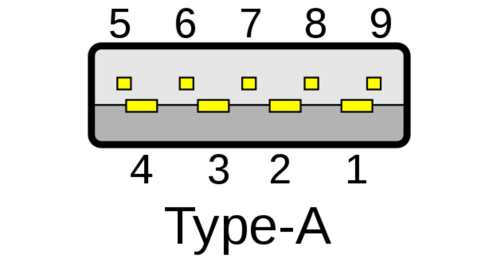 Picture by Wikimediauser NiridyaCreative Commons Attribution-Share Alike 3.0 Unported
Pins USB 3.x
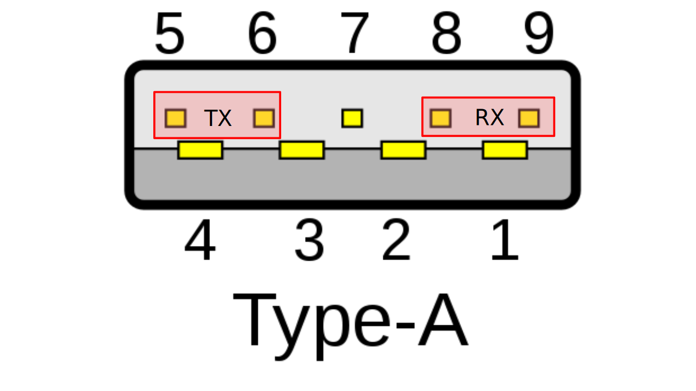 Picture by Wikimediauser NiridyaCreative Commons Attribution-Share Alike 3.0 Unported
Pins USB-C
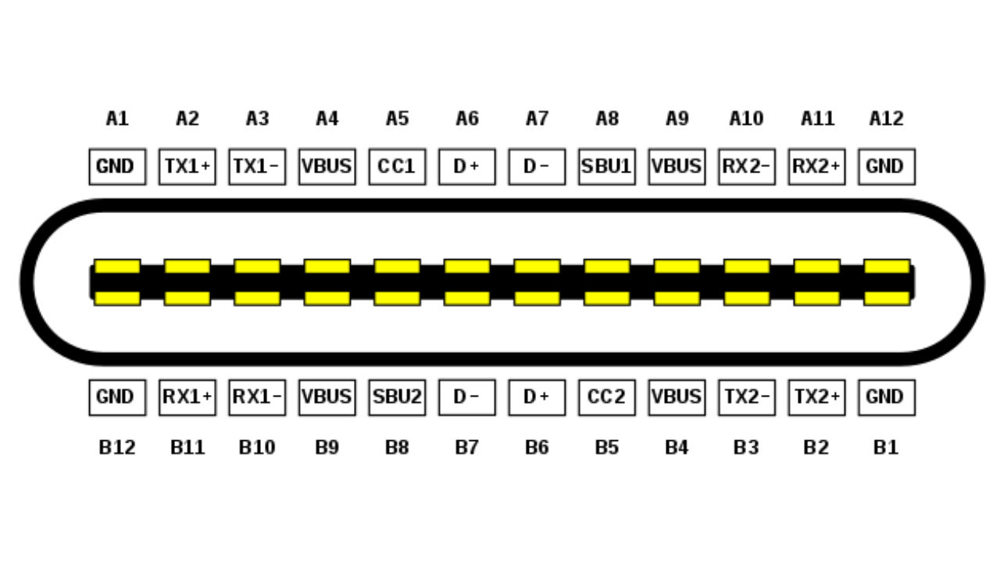 Picture by Wikimediauser Chindi.apCreative Commons Attribution-Share Alike 4.0 International
Pins USB-C
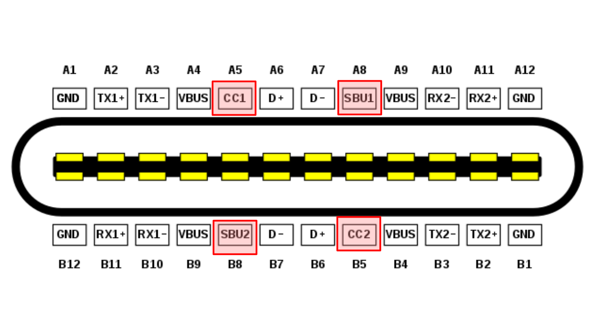 Picture by Wikimediauser Chindi.apCreative Commons Attribution-Share Alike 4.0 International
Pins USB-C
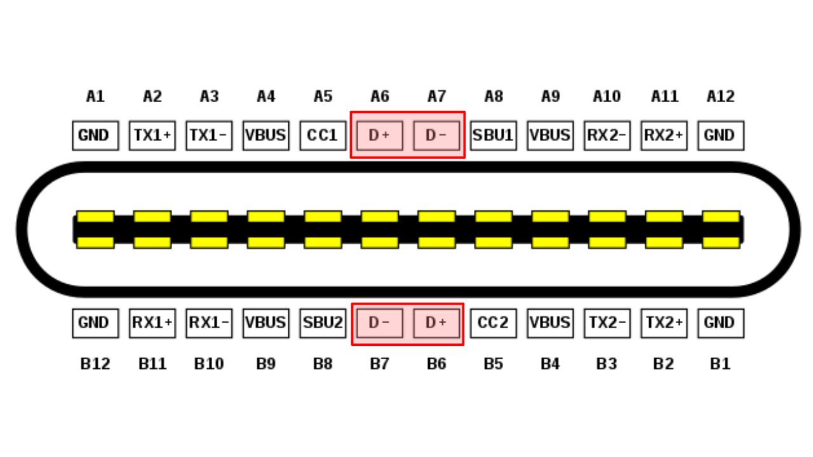 Picture by Wikimediauser Chindi.apCreative Commons Attribution-Share Alike 4.0 International
Pins USB-C
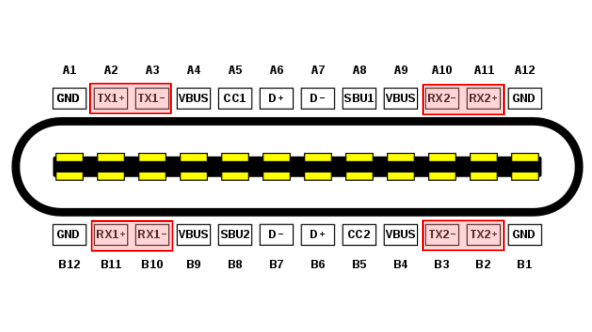 Picture by Wikimediauser Chindi.apCreative Commons Attribution-Share Alike 4.0 International
Speed
| Name | Introduction | Datarate |
|---|---|---|
| Low Speed | 1.0 | 1.5 Mbit/s |
| Full Speed | 1.0 | 12 Mbit/s |
| Hi(gh) Speed | 2.0 | 480 Mbit/s |
| SuperSpeed | 3.0 | 5 Gbit/s |
| SuperSpeed+ | 3.1 | 10 Gbit/s |
| SuperSpeed+ | 3.2 | 20 Gbit/s |
Name of Speed
| Marketing Name | 3.2 | 3.1 | 3.0 |
|---|---|---|---|
| SuperSpeed USB | Gen 1×1 | Gen 1 | O |
| SuperSpeed USB 10Gbps | Gen 1×2 | ||
| SuperSpeed USB 10Gbps | Gen 2×1 | Gen 2 | |
| SuperSpeed USB 20Gbps | Gen 2x2 |
Power
| Specification | Voltage | Current | Power |
|---|---|---|---|
| USB 1.0 | 5 V | 0.1 A | 0.5 W |
| USB 2.0 | 5 V | 0.5 A | 2.5 W |
| USB 3.x | 5 V | 0.9 A | 4.5 W |
Power
| Specification | Voltage | Current | Power |
|---|---|---|---|
| USB-BC 1.2 | 5 V | 1.5 A | 7.5 W |
| USB-Type C | 5 V | 3 A | 15 W |
| USB-PD | 5 V - 20 V | 5 A | 100 W |
Power
 Picture by Fauth Niklas (@FauthNiklas) SRC
Picture by Fauth Niklas (@FauthNiklas) SRC
Powerr
 Picture by Fauth Niklas (@FauthNiklas) SRC
Picture by Fauth Niklas (@FauthNiklas) SRC
Powerrr
 Picture by Jan Henrik (@JanHenrikH) SRC
Picture by Jan Henrik (@JanHenrikH) SRC
Story
about a mac and a switchDescriptors
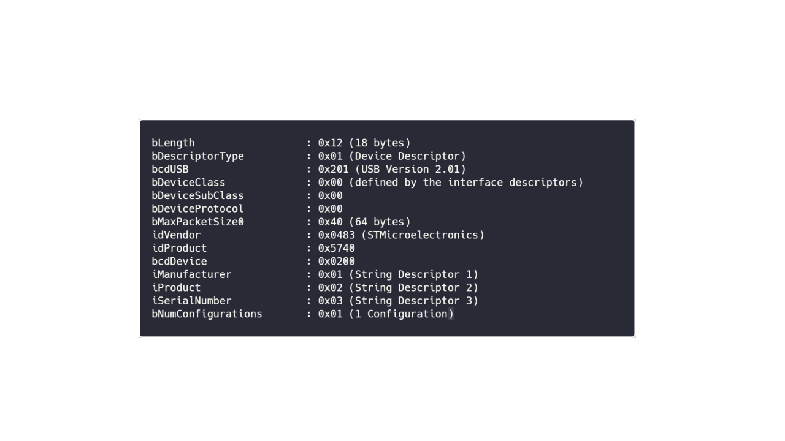Descriptors
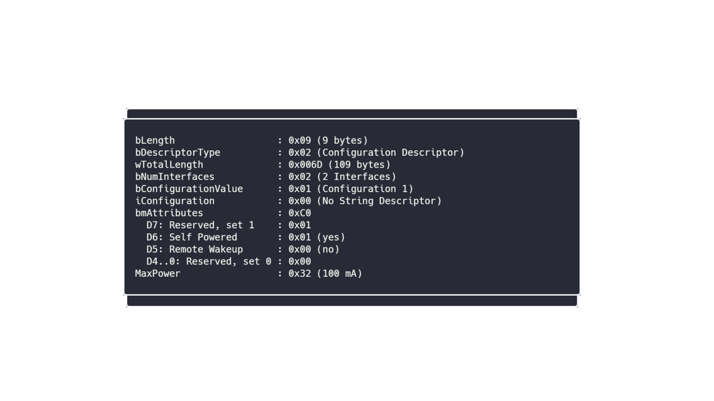Descriptors
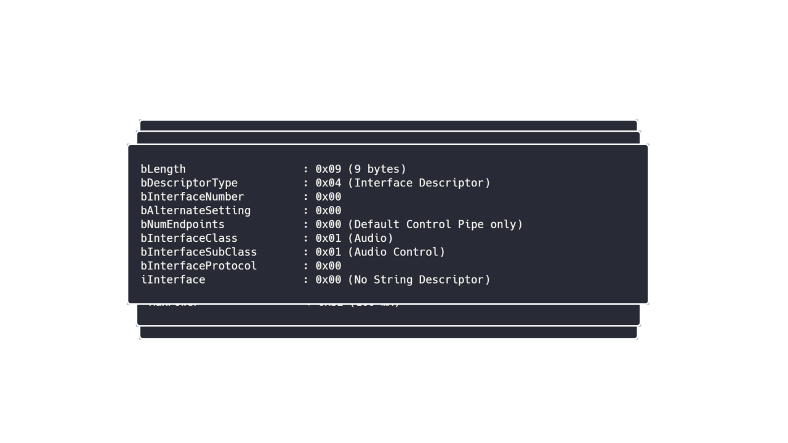Descriptors
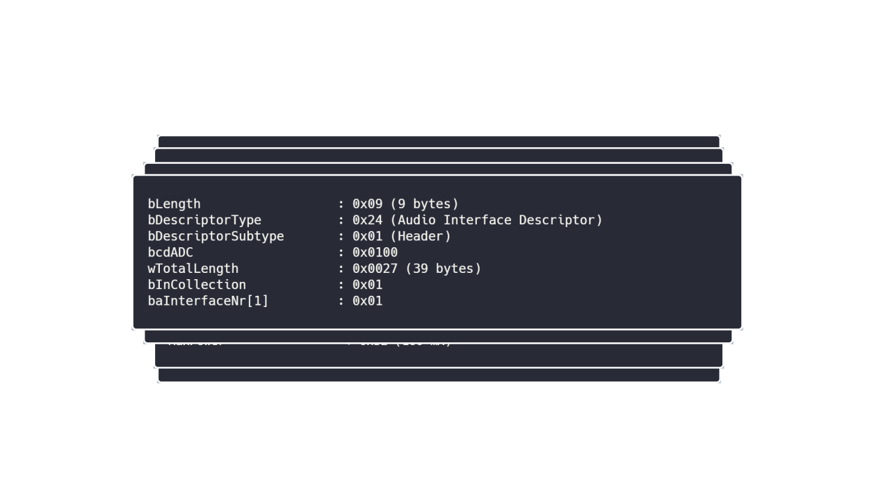Descriptors
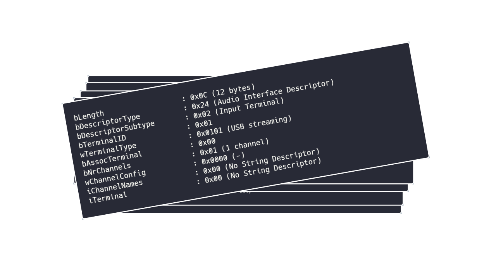Descriptors
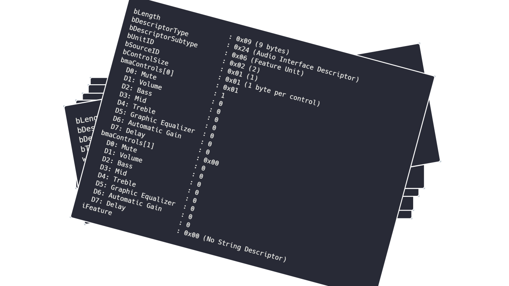Descriptors
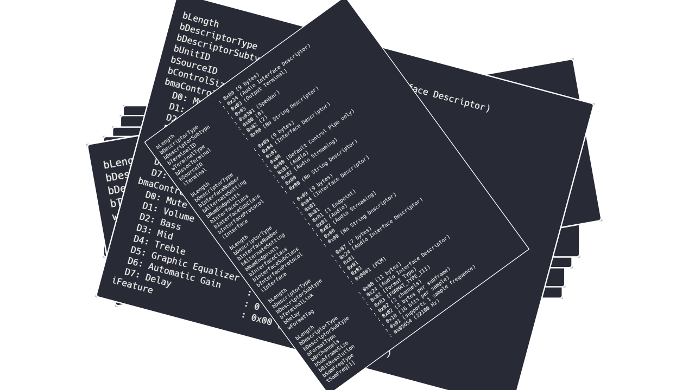Descriptors
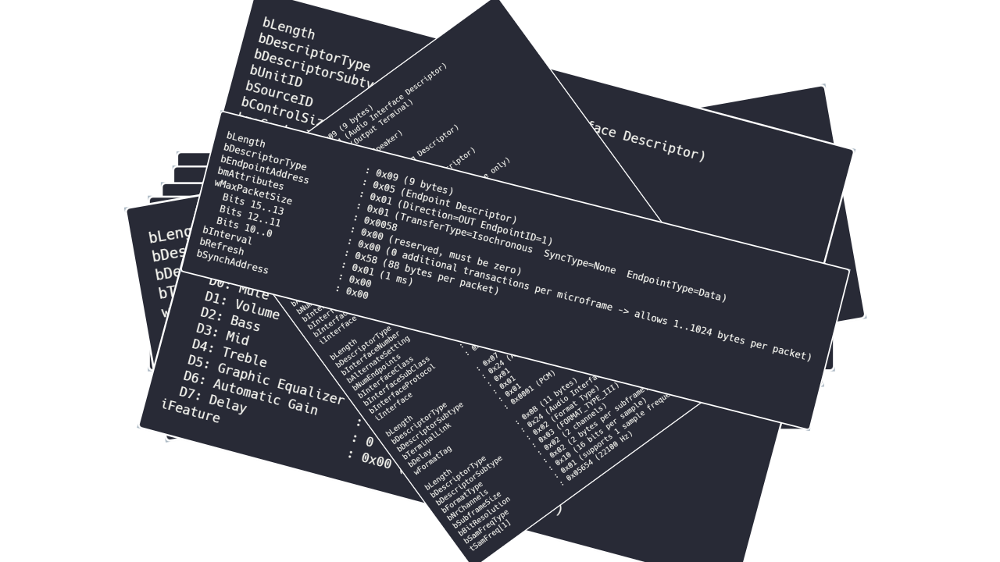Descriptors

Descriptors

Last emBO...
Endpoints
- Endpoint 0
- Endpoints max low speed 1 (bi) + 2 (uni)
- Endpoints other speeds 1 (bi) + 15 (bi)
- Comparison STM32F723k HS-PHY: 1 (bi) + 8 (bi)
Device Descriptor
- shows IDs
- sets (sub)classes
- sets String-IDs
- sets number of configurations
Device Descriptor
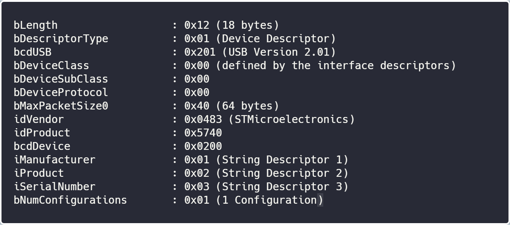Configuration Descriptor
- sets number of interfaces
- sets Power
- only 1 configuration active (!)
- "modes" of device
Configuration Descriptor
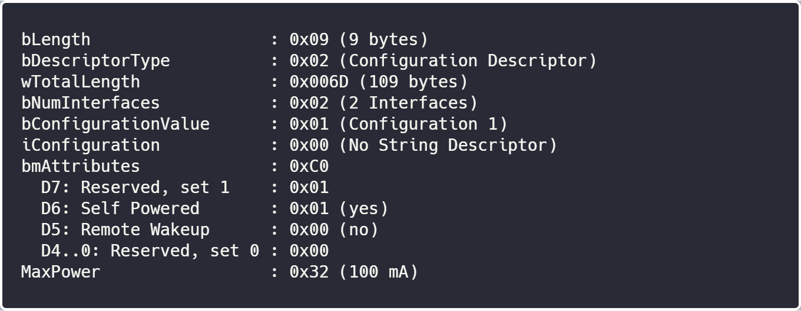Interface Descriptor
- "grouping Endpoints"
- 1 function of device
Interface Descriptor
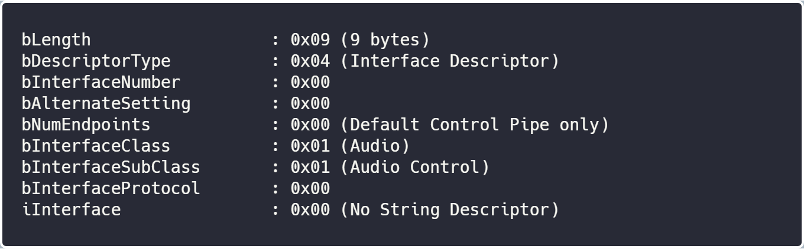Endpoint Descriptor
- How Endpoint Acts
- max packetsize
- transfertype (isochronous?)
- synctype
- interval?
Endpoint Descriptor
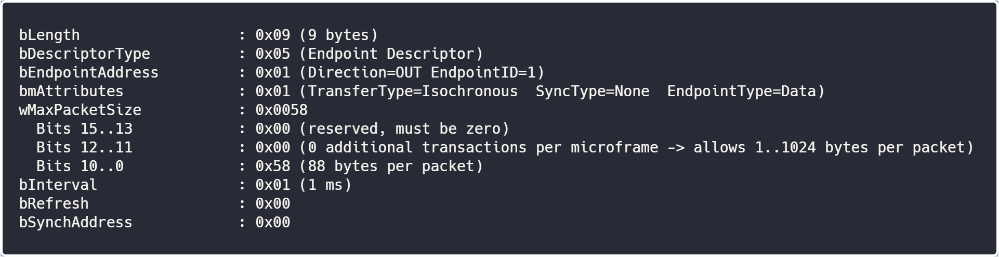Why not diz?
using serialport = USB::CDC;
constexpr auto this_Device = USB::Device<serialport>{};
this_Device.init();What is needed?
- known Endpoints of CDC-Class
- know HARDWARE (Mikrocontroller)
- using names?
- know how to write to HW (aka HAL-Wrapper)
device in stupid
namespace usb{
struct device_t {
constexpr static std::array<uint8_t, 0x12> device_descriptor = {
0x12, // size static (for what i know) ...
0x01, // device descriptor!
0x02, 0x01, // usb version
0x00, // class: here by interface
0x00, // subclass,
0x00, // protocol_t,
0x64, //packetsize
0x42, 0x42, //Vendor-ID
0x36, 0x36, //Product-ID
0x01, 0x00, // Device Version BY DEVELOPER
0x00, // Manufacturer-stringid
0x00, //product-stringid
0x00, // serialnumber-stringid
0x01 // num_of_configurations
}; }; };device based on HW
0x12, // size static (for what i know) ...
descriptor_type_t::device,
HW_t::usb_high,
HW_t::usb_low,
class_t::class_by_interface,
subclass_t::subclass_by_interface,
protocol_t::bla,
HW_t::maxpacketsize,device based on HW
template<typename HW_t>
struct device_t {device based on HW
namespace hw {
struct stm32f723k_hs {
static constexpr uint8_t usb_high = 02;
static constexpr uint8_t usb_low = 01;
static constexpr uint8_t maxpacketsize = 64;
};
}device based on HW
enum descriptor_type_t : uint8_t {
null = 0x00,
device = 0x01,
configuration = 0x02,
string = 0x03,
interface = 0x04,
endpoint = 0x05
};device based on HW
template<typename HW_t, int _Vendor_t = 0x4242, int _Product_t = 0x4242>
struct device_desc_t {
uint8_t size = sizeof(*this);
descriptor_type_t descriptor_type = device;
uint8_t usb_high = HW_t::usb_high;
uint8_t usb_low = HW_t::usb_low;
class_t uclass = class_t::class_by_interface;
subclass_t subclass = subclass_t::subclass_by_interface;
protocol_t protocol = protocol_t::bla;
uint8_t maxpacketsize = HW_t::maxpacketsize;
Configuration Descriptor
- same process
- but with list of interfaces
- list of sizes of following descriptors
- powersource
- other config?
Interface Descriptor
- identical to device descriptor
- list of endpoints
Endpoint Descriptor
- Nothing really new...
What is missing?
- check if enough endpoints exist!
- put specific endpoints to interfaces!
how is STHAL working?
USBD_Init(&hUsbDeviceHS, &HS_Desc, DEVICE_HS);
USBD_RegisterClass(&hUsbDeviceHS, &USBD_CDC);
USBD_CDC_RegisterInterface(&hUsbDeviceHS, &USBD_Interface_fops_HS);
USBD_Start(&hUsbDeviceHS);
HID
USBD_Init(&hUsbDeviceHS, &HS_Desc, DEVICE_HS);
USBD_RegisterClass(&hUsbDeviceHS, &USBD_HID);
USBD_Start(&hUsbDeviceHS);
maybe combine classes?
using n = USB::NA_CLASS;
using b = USB::BA_CLASS;
constexpr auto this_Device = USB::Device<n,n,n,n,n,n,n,n,n,b>{};
this_Device.init();
Fakefunctioncalls!
USBD_Init(&hUsbDeviceHS, &HS_Desc, DEVICE_HS);
<<composite class wrapper START>>
NA
NA
NA
NA
NA
NA
NA
NA
NA
BATMAN
<<composite class wrapper END>>
USBD_Start(&hUsbDeviceHS);
Composite
- 1 Device? DeviceClass = specific Device
- more Devices? Deviceclass = custom, vendor or composite but with more interfaces.
- Interface Association Descriptors act like Devices
Get USB working
- Why is it that complicated?
- easier to use ft232 (~1,50€)
I thought...
 Picture by stafforgreen0
Picture by stafforgreen0 Pixabay License
feeling was right..
- only good on existing configurations (not many)
- hell if something is different (example: 2 CDCs)
- you have to write your own descriptors!
really really bad....
0x09, /* bLength: Configuation Descriptor size */
USB_DESC_TYPE_OTHER_SPEED_CONFIGURATION,
USB_CDC_CONFIG_DESC_SIZ,
0x00,
0x02, /* bNumInterfaces: 2 interfaces */
0x01, /* bConfigurationValue: */
0x04, /* iConfiguration: */
0xC0, /* bmAttributes: */
0x32, /* MaxPower 100 mA */
/*Interface Descriptor */
0x09, /* bLength: Interface Descriptor size */
USB_DESC_TYPE_INTERFACE, /* bDescriptorType: Interface */
/* Interface descriptor type */
0x00, /* bInterfaceNumber: Number of Interface */
0x00, /* bAlternateSetting: Alternate setting */
0x01, /* bNumEndpoints: One endpoints used */
0x02, /* bInterfaceClass: Communication Interface Class */
0x02, /* bInterfaceSubClass: Abstract Control Model */
0x01, /* bInterfaceProtocol: Common AT commands */
0x00, /* iInterface: */
/*Header Functional Descriptor*/
0x05, /* bLength: Endpoint Descriptor size */
0x24, /* bDescriptorType: CS_INTERFACE */
0x00, /* bDescriptorSubtype: Header Func Desc */
0x10, /* bcdCDC: spec release number */
0x01,
/*Call Management Functional Descriptor*/
0x05, /* bFunctionLength */
0x24, /* bDescriptorType: CS_INTERFACE */
0x01, /* bDescriptorSubtype: Call Management Func Desc */
0x00, /* bmCapabilities: D0+D1 */
0x01, /* bDataInterface: 1 */
/*ACM Functional Descriptor*/
0x04, /* bFunctionLength */
0x24, /* bDescriptorType: CS_INTERFACE */
0x02, /* bDescriptorSubtype: Abstract Control Management desc */
0x02, /* bmCapabilities */
/*Union Functional Descriptor*/
0x05, /* bFunctionLength */
0x24, /* bDescriptorType: CS_INTERFACE */
0x06, /* bDescriptorSubtype: Union func desc */
0x00, /* bMasterInterface: Communication class interface */
0x01, /* bSlaveInterface0: Data Class Interface */
/*Endpoint 2 Descriptor*/
0x07, /* bLength: Endpoint Descriptor size */
USB_DESC_TYPE_ENDPOINT , /* bDescriptorType: Endpoint */
CDC_CMD_EP, /* bEndpointAddress */
0x03, /* bmAttributes: Interrupt */
LOBYTE(CDC_CMD_PACKET_SIZE), /* wMaxPacketSize: */
HIBYTE(CDC_CMD_PACKET_SIZE),
0xFF, /* bInterval: */
/*---------------------------------------------------------------------------*/
/*Data class interface descriptor*/
0x09, /* bLength: Endpoint Descriptor size */
USB_DESC_TYPE_INTERFACE, /* bDescriptorType: */
0x01, /* bInterfaceNumber: Number of Interface */
0x00, /* bAlternateSetting: Alternate setting */
0x02, /* bNumEndpoints: Two endpoints used */
0x0A, /* bInterfaceClass: CDC */
0x00, /* bInterfaceSubClass: */
0x00, /* bInterfaceProtocol: */
0x00, /* iInterface: */
/*Endpoint OUT Descriptor*/
0x07, /* bLength: Endpoint Descriptor size */
USB_DESC_TYPE_ENDPOINT, /* bDescriptorType: Endpoint */
CDC_OUT_EP, /* bEndpointAddress */
0x02, /* bmAttributes: Bulk */
0x40, /* wMaxPacketSize: */
0x00,
0x00, /* bInterval: ignore for Bulk transfer */
/*Endpoint IN Descriptor*/
0x07, /* bLength: Endpoint Descriptor size */
USB_DESC_TYPE_ENDPOINT, /* bDescriptorType: Endpoint */
CDC_IN_EP, /* bEndpointAddress */
0x02, /* bmAttributes: Bulk */
0x40, /* wMaxPacketSize: */
0x00,
0x00 /* bInterval */
};
Paul Targosz
- twitter.com/Sickeroni
- github.com/Sickeroni
- linkedin.com/in/paul-targosz
- xing.com/profile/Paul_Targosz
- paultargosz86@gmail.com